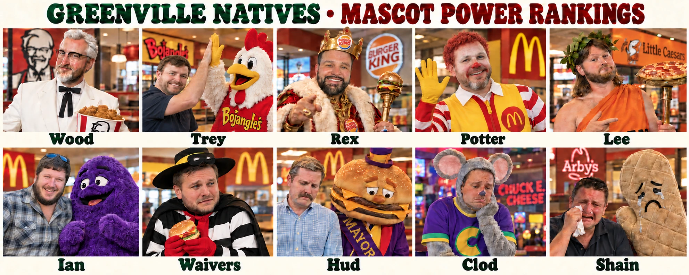

{{ r.tierHead }}
{{ r.rank }}
{{ r.p.mascot }}
{{ r.tagline }}
{{ r.subtag }}
{{ r.p.full }} × {{ r.p.mascot }}
{{ r.p.full }} {{ r.rec }}{{ r.powerLine }}
{{ r.text }}
THE ORDER RECEIPT
›{{ it }}

Wood and I are the first pair in league history to start the same season 4–0. We also share the worst all-play record any 4–0 team has ever had: 20–16. Every previous member of the club won at least 27 of 36. Standards have slipped.
A year ago the two of us went a combined 8–18. Wood won three games in all of 2025. He has four already, and I have no idea how either of us did it. Sam LaPorta caught a late touchdown on Sunday night to get me past Hud, and Juwan Johnson made a couple of catches on Monday night to get Wood past Ian by 2.4.
Rex has scored 581.5 points, one short of the best four-week start in league history, and sits behind both of us. I understand his frustration. I will not be changing the rankings.
How the power score works. Forty points for a perfect record, plus a fifth of your best and worst weeks added together. Total points don’t count. That’s how Rex leads the league in points (581.5) and all-play (30–6) and still ranks third: his one loss costs him about ten points, and his bigger best and worst weeks earn almost exactly that back. He and I both land on 83.8, and the sheet has me a hair ahead.
{{ r.text }}
One point. The best four-week start in league history is Waivers’ 582.5. Rex is second, and he’s been the top scorer in three of the four weeks, which only Waivers in 2011 and Potter in 2014 had done before.
Highest score, lowest score, the blowout and the close one are all on the scoreboard up top. These are the ones that needed saying.
Lineup numbers count points left on the bench against the best possible lineup from each team’s active roster. IR players are not counted.
Nine players, 233.9 points, and nobody on Wood, Ian, or Hud made it. Mark and Shain each have two.
How often teams have made the playoffs, by record after four weeks.
The same history, split by points rank after four weeks. Only the top 4 make the playoffs.
Wood is the only 4-0 team sitting in the top four in points. I’m 4-0 and fifth, and all six 4-0 teams in league history were in the top four, so I’m in uncharted territory. Waivers is 1-3 but fourth in points, and the two teams that did that before split 1-1.
Pick a team to see its record on every schedule in the league. When a team meets itself on someone else’s schedule, it plays that schedule’s owner instead.
Wood and I are 4-0 on exactly one schedule each: our own. Rex is never worse than 3-1 on anybody’s schedule. Mark would be 4-0 on mine or Rex’s, and Waivers would be 4-0 on mine. Shain doesn’t get better than 2-2 on any schedule in the league. Clod is 0-4 on four of them.
Series numbers are all-time head to head.
{{ g.text }}